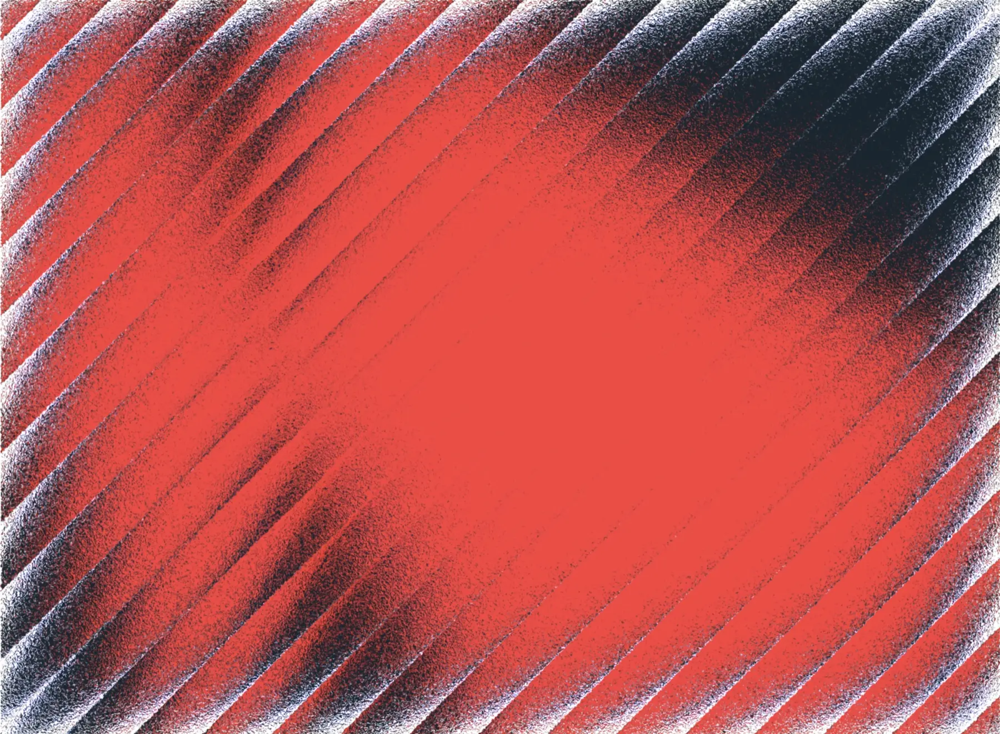

The Intelligent System of Record for
Infrastructure
Procurement.
Klarum helps infrastructure bid teams build bid pipelines, from sourcing to award in one AI-powered workflow.
Start freeklarum.comStockholm, Medborgarplatsen 25